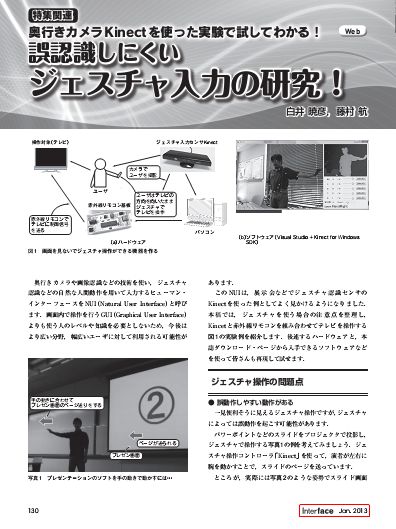

Kinectを使った先端特許を雑誌で公開
2012年11月25日発売予定のCQ出版社「インターフェース」2013年1月号「研究 人間センシング」のp.130-138に、『誤認識しにくいジェスチャ入力の研究！』という記事を寄稿いたしました。
記事のWeb版はこちら
Kinectを用いて姿勢認識を行い、ビット・トレード・ワン社（神奈川県相模原市）の「USB接続 赤外線リモコンKIT」によってテレビのチャンネル切り替えを操作できます。
本誌の記事はこちら http://www.kumikomi.net/interface/contents/201301.php
一部PDFで公開されているようです！ http://www.kumikomi.net/interface/sample/201301/if01_130.pdf
以下にサンプルプログラムソースコードと限定版のAccuMotionライブラリを公開します。
ダウンロードはこちらから KinectTVRemote+AccuMotionLib (716 ダウンロード)
以下、Readmeより引用。
README: Kinect TV Remote + AccuMotion.DLL
制作者：神奈川工科大学 白井研究室 藤村 航
公開日：2012年11月19日
http://www.shirai.la/members/wataru-fujimura
概要
このツールはCQ出版社「インターフェース」2013年1月号の特集『誤認識しにくいジェスチャ入力の研究！』のためのサンプルプログラムです。Kinectを用いて姿勢認識を行い、赤外線リモコンキットによってテレビのチャンネル切り替えを操作できます。
※注意：テレビの赤外線コードは会社ごと仕様が違います。このプログラムではSharpのデジタルテレビを用いています。他社のテレビでは動かないことがあります。
実行環境
- .NET Framework 4.0
- Kinect for Windows SDK 1.6
- 「赤外線リモコンキット」のドライバ
以上のものがPCに導入・動作していることを確認してください。
実行方法
1．PCにKinectと赤外線リモコンデバイスをPCに接続します。
（赤外線リモコンキットデバイスがなくても起動はしますが、テレビ操作はできません）
- Kinectを置く高さは、腹～胸あたりの高さに設置してください
- 赤外線リモコンはできるだけテレビの近くに設置してください
2．「Kinect TV Remote\KinectTVRemote\bin\Release」内にあるexeを実行します。
（exeが起動しなかった場合、Visual Studioでビルドし直してください）
3．プログラムが起動したことを確認し、Kinectで人物認識できるように1.5～2mほど離れ、正面に立ちます
4．入力操作をするために、右腕をKinectに向かって突き出してください。しばらくすると右下のMotionTypeが「None」から「HandKeep」に変化します。これで「溜め動作」が認識され、「入力操作」を認識できるようになります。
{kind=link}
5．MotionTypeが「HandKeep」になった状態で、右腕を上下左右に動かすとMotionTypeが「HandUp」「Handdown」「Handdown」「HandLeft」に変化します。
MotionTypeが変化した段階で、入力操作として受けつけ、各姿勢状態に設定した「赤外線コード」が送信されテレビの操作を行うことができます。
{kind=link}
図 2：各姿勢を行い、認識した状態
現在設定してある操作
- HandUp：矢印の上ボタン
- Handdown：矢印の下ボタン
- HandRight：決定ボタン
- HandLeft：番組表を表示するボタン
HandKeepやHandUpなどの姿勢を記録する方法
例：「HandKeep」の姿勢を記録する場合
1.「HandKeep」で認識させたいポーズをとる （左右の腕の骨格情報だけを保存します）
2.「HandKeep」の右側にある「姿勢を保存」のボタンを押す （無線マウスなどの利用がお勧めです）
認識精度の変更
各姿勢のスケールバーを調整して、閾値を設定します（初期値は85%）。各姿勢の類似度が閾値を超えた場合、姿勢を行ったと認識します。
{kind=link}
図 3：「HandKeep」の姿勢とユーザーの行っている姿勢の類似度
図3では「HandKeep」の類似度が54%であり、この状態では「HandKeep」を認識しません。
閾値を上げると認識精度が上がります。誤認識を防ぐことができますが、設定した姿勢を完璧に再現する必要があり、入力が難しくなります。
閾値をさせると認識精度が下がります。入力が容易になりますが、誤認識も増える可能性があります。
リモコンの機能を変える
プログラムをVisual Studioで開き、「TVRemote.cs」を開きます。「code〇」という変数を変更すると、送信する赤外線のコードが変わり別の操作をすることができます。
- code0：HandUpで用いる
- code1：Handdownで用いる
- code2：HandRightで用いる
- code3：HandLeftで用いる
～その他～
- 赤外線のコードは、「赤外線リモコンキット」のサンプルにあるサンプルプログラム「受信用設定ツール」「送信用設定ツール」で確認できます
http://a-desk.jp/modules/forum_hobby/index.php?cat_id=8
- 赤外線の通信フォーマットとしては、AEHAフォーマット（家電協会）を用いています
http://a-desk.jp/project/hobby/IR/USB_IR_REMOCON_LIBRARY.pdf
- ソニー製のテレビの場合は、信号の送り方を変えなければならないようです
http://a-desk.jp/modules/forum_hobby/index.php?topic_id=38
AccuMotionライブラリについて
本プロジェクトに同梱されている「AccuMotion.dll」は特許出願中（特願2011-171482「姿勢判定方法」）に基づく学校法人 幾徳学園 神奈川工科大学 情報学部 情報メディア学科 白井研究室の著作物です。
- CQ出版社「インターフェース」2013年1月号の特集のための限定バージョンです
- サポート等を行う予定はありませんが、内部動作や商用使用等のライセンスについてご興味があります場合は、以下にご相談ください。
【技術開発】白井研究室AccuMotionプロジェクト accumotion <at> shirai.la
【特許ライセンス関連】TAMA-TLO株式会社 042-631-1325 tech <at> tama-tlo.com
—-
他の特集も大変面白いです！